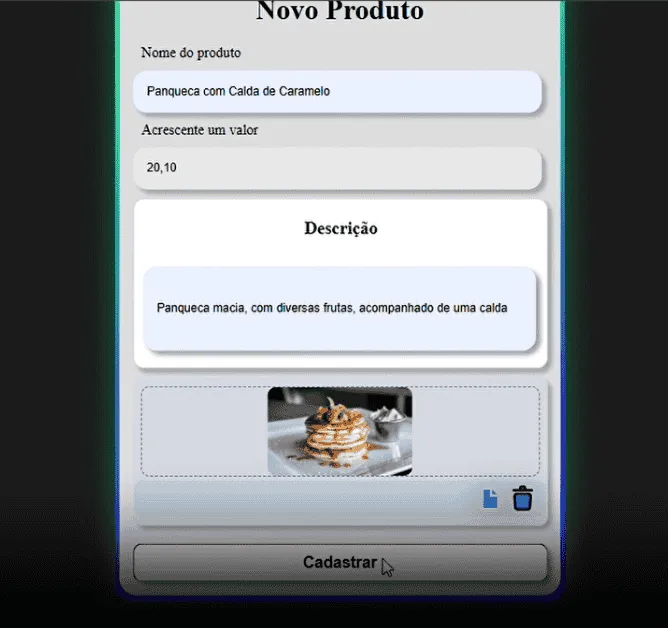

SYSTEM DELIVERY CORE
Este Sistema de Pedidos de Delivery é uma aplicação full-stack desenvolvida com Spring Boot e Thymeleaf, focada no controle rigoroso de fluxos de acesso e segurança de dados.
O projeto se destaca pela implementação de regras de negócio complexas no ecossistema backend, incluindo um motor próprio de validação de transações financeiras utilizando o Algoritmo de Luhn e roteamento de controle de acesso via Cookies e JWT. Uma arquitetura Server-Side Rendering (SSR) robusta, performática e integrada ao PostgreSQL.
ABOUT_PROJECT
O desenvolvimento deste ecossistema focou na criação de validações nativas customizadas. Na camada de checkout, em vez de depender de bibliotecas externas, foi implementada uma classe de validação financeira que executa o Algoritmo de Luhn via código, combinada com Expressões Regulares (Regex) estruturadas em Switch Expressions modernas do Java para identificar instantaneamente bandeiras como Visa, Mastercard, Amex e Hipercard.
A arquitetura de segurança utiliza Spring Security + JWT de forma híbrida: após a autenticação, o perfil do usuário (Role) é armazenado em Cookies seguros. O servidor intercepta esses cookies para realizar um redirecionamento dinâmico na rota inicial (/home/admin ou /home/user), garantindo que o painel administrativo de CRUD de produtos fique totalmente isolado de acessos não autorizados.
É a tecnologia trabalhando para criar uma experiência de compra sem atritos, segura e blindada contra falhas.
TECH_STACK
- Java
- Spring Boot
- Spring Security + JWT
- PostgreSQL
- JPA / Hibernate
- Thymeleaf
- JavaScript
- API REST
ARCHITECTURE
- MVC Pattern
- Separação Controller / Service / Repository
- DTO Pattern
- Repository Pattern
- Camadas organizadas
- Tratamento global de erros
FEATURES
- → Cadastro e autenticação de usuários
- → Controle de acesso com JWT
- → Diferenciação entre usuário e administrador
- → CRUD completo de produtos
- → Upload de imagens dos produtos
- → Simulação de pagamento
- → Validação de dados de cartão
- → Envio automático de e-mails
- → Tratamento padronizado de erros
DATA_FLOW
- 1. Identificação de Perfil: O usuário faz login e o sistema abre o painel correspondente (cardápio para o cliente ou controle de produtos para o dono).
- 2. Envio do Pedido: O cliente escolhe os produtos e preenche os dados de pagamento na tela de fechamento da compra.
- 3. Blindagem de Dados: O servidor analisa os dados do cartão nos bastidores, rejeitando erros de digitação de forma imediata.
- 4. Alerta de Venda: A compra é confirmada, o estoque é atualizado e o proprietário recebe um alerta instantâneo por e-mail com os detalhes do pedido para iniciar o preparo.